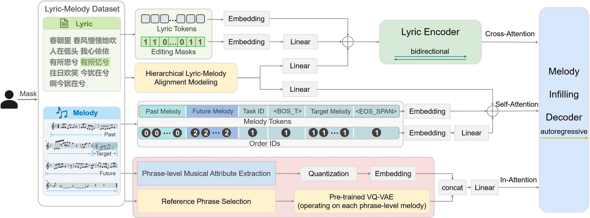

|
 |
| Lyric-to-melody generation is an important yet highly challenging task in automatic songwriting. We study the problem of editable lyric-to-melody generation, motivated by the iterative nature of real-world music creation, where lyrics and melodies are frequently revised while preserving surrounding musical context. However, existing methods primarily focus on generation from scratch and lack support for flexible editing, leaving this problem under-explored. In this paper, we propose HE-L2M, a novel hierarchical editable lyric-to-melody generation framework that provides a unified formulation for lyric-to-melody generation and editing by modeling melody editing as a lyric-conditioned infilling problem, enabling flexible modifications across multiple structural levels (word, phrase, sentence, section, and song) while maintaining global musical coherence and accurate lyric-melody alignment. Specifically, we introduce a hierarchical lyric-melody alignment modeling approach to capture accurate lyric-melody alignment, and develop a lyric-conditioned melody infilling Transformer that leverages bidirectional melodic contexts via a reordered decoding strategy. We further incorporate structural conditioning with reference phrases and phrase-level musical attributes to enhance controllability and structural consistency, and adopt a curriculum learning strategy to effectively train the model across diverse hierarchical editing tasks. Extensive experiments demonstrate that HE-L2M achieves superior performance in both melody generation and editing across objective and subjective evaluations. |